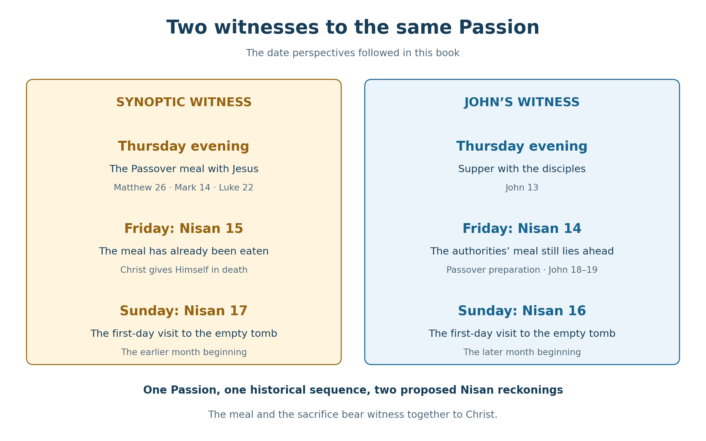

Book 1 · The Cross at the Center of Time · Chapter 1 of 18
Looking toward the center through John's testimony
Why do the Gospels appear to place Christ’s death on two different Passover dates? Matthew, Mark, and Luke present Jesus eating the Passover before His death. John presents the authorities still anticipating their Passover meal as Jesus is brought before Pilate. In the reading I follow here, the crucifixion falls on Nisan 15 in the first three Gospels and Nisan 14 in John.
That question leads to a larger one. What if the difference belongs to a larger harmony? What if the calendars, the people who keep them, and even the traditions through which later generations remember Christ have been drawn toward a center that gives them their meaning?
That center is the Cross. I approach it as the place where God gathers the scattered, fulfills the Scriptures, and brings His creation into its intended order. The calendar comparisons in this book serve that conviction. They are ways of looking toward the One in whom, as Paul writes, God purposes “to bring all things in heaven and on earth together in Christ.”1
In this chapter
On the eagle's wings
The image of John as an eagle expresses the perspective I seek. His Gospel opens before the world's beginning, with the Word who was with God and was God. It then brings us to flesh, hunger, tears, wounds, and a burial place. Eternity and the particular events of a human life remain in view together. The One through whom all things came into being stands within the world He made.2
I want to follow that movement. I write as a reader trying to rise on John's wings and see the Passion through his testimony. Sometimes I must look closely at the ground: a crescent moon, a festival rule, a day beginning at sunset, a number of elapsed days. At other times I look outward from the Cross and ask what those particulars may disclose about the purpose of the whole creation. The same inquiry requires both kinds of attention.
My conviction is that Scripture is inspired and that the Gospel witnesses are truthful. I also read the Gospel, the Johannine letters, and Revelation as the testimony of the same John. Within that understanding, the Lamb, the Word, the appointed hour, the numbered periods, and the gathering of the redeemed illuminate one another. I believe John perceives a unity that ordinary chronological description can only begin to express.3
The further connections I draw remain my reading of his witness. When I say that John invites us to see a pattern, I am explaining how I understand his presentation. When I propose what God may have accomplished in time itself, I am taking a further step of theological interpretation. I want that step to be visible, because it lies near the heart of this book.
The Cross as the center and source of time
We ordinarily picture time as a line. Creation stands near one end, our present lies somewhere along it, and the future stretches ahead. In that picture, the crucifixion occupies a particular place in the first century. That historical location matters throughout these chapters.
My working conviction is that the Cross is the center from which the order and fulfillment of time proceed in both directions. I further suspect that time itself has its origin there. What comes before it in our experience may depend upon it as fully as what comes after. In this sense, I regard the Cross as a possible source of time itself: the historical act in which the eternal Creator establishes the meaning and perfected harmony of His creation.
“Source” here concerns dependence upon God's act, rather than the first date in a chronological list. Christ does not begin to exist at His crucifixion. He is before all things. Yet the One through whom all things were created is also the One through whose blood God makes peace. Paul places creation, its continuance, Christ's resurrection, and reconciliation through the Cross within one account of His supremacy. I take that unity seriously when asking how creation's beginning and end may depend upon its center.4
A stone dropped into water sends ripples outward. The image helps me contemplate the Passion reaching into the past and future together. The comparison is imperfect, since the stone and water themselves already exist within time. Nevertheless, it expresses the direction of my thought: the effects of the Cross may extend through the whole temporal order, even where our ordinary experience allows us to follow only the sequence from yesterday to tomorrow.
I mean to leave room for an actual transformation of reality. The claim I am exploring goes beyond a change in how believers remember the past. Perhaps, in making His elect and their inheritance pristine, God reaches into what was and what would have been, undoing corruption at its root. A history that was real under the dominion of death may be overcome so completely that its horrors no longer possess the reality or authority they once had. I ask whether the new creation can include this depth of renewal.
From within our experience, events still appear to unfold in their ordinary succession. We cannot stand outside God's action and compare creation with an untouched version of its past or future. If the temporal order already bears the effects of the Cross, that comparison is unavailable to us. This is one reason I present the proposal as a theological account of reality rather than a result that astronomical calculation can establish.
Scripture's promises give me the grounds for asking. Christ's death redeems transgressions committed under the first covenant. The former things pass away. God makes all things new. Isaiah's new heavens and new earth are accompanied by the promise that the former things will no longer come to mind. These statements establish the reach and completeness of redemption; my proposal explores how far their temporal implications might extend.5
I see God reversing creation's ruin: He enters the darkness, confronts the disorder, and brings forth a creation made whole in Christ. This does not make the suffering narrated in Scripture unreal. The wounds belong to the risen Lord's testimony. My question is whether God's final victory over that suffering reaches more deeply into reality than our present categories of before and after allow us to comprehend.
The Cross therefore becomes, in my understanding, the gate through which time receives its fulfillment. God, who is beyond our temporal limits, acts within them. The center belongs to history, while the fullness of what happens there exceeds the historian's reach.
About noon
The darkness at the crucifixion gives this inquiry a particular focus. Mark places Jesus on the Cross at the third hour and describes darkness from the sixth hour to the ninth. On the ordinary daylight-hour reading, noon lies at the middle of the six-hour framework running from crucifixion to the ninth-hour cry and subsequent death.6
At the very hour when the day should shine most fully, darkness covers the scene. I find here a sign of creation brought before its Creator: light and darkness, judgment and deliverance, death and life meeting in the suffering of Christ. It is as though time stands still. I also ask whether something beyond our ordinary measure of time actually occurs.
For that possibility I sometimes use the image of an event horizon. I borrow the image to describe the limit of our access to what God does at the Cross. The proposed transformation is real in the understanding I am exploring; the comparison with a black hole is an analogy, not an identification of the crucifixion with a known astrophysical process. The Gospels report darkness. They do not give a measurement of stopped or reversed time.
John's phrase “about the sixth hour” draws my attention toward this center, although his notice belongs to the proceedings before Pilate. Mark's sixth hour belongs to the darkness while Jesus is already crucified. I retain the settings of both notices. The later comparisons develop the significance I find in the sixth hour, while leaving the historical coordination of these notices open. The word “about” alone does not settle that question.6
For now, the distinction is simple. Noon is the proposed center of Christ's time on the Cross, not the reported hour of His death. When later diagrams place Christ at noon between two Passover midnights, they are locating Him on the Cross at that midpoint. The narrative of His death follows the ninth-hour cry.
The feast already entered and the sacrifice still ahead
We can now return to the two dates with the purpose of the inquiry in view. Leviticus distinguishes Passover on the fourteenth day of the first month from Unleavened Bread beginning on the fifteenth. In the sunset-based sequence used here, the sacrifice precedes the evening meal; that meal and the following daylight belong to Nisan 15.7
Luke records Jesus saying, “I have eagerly desired to eat this Passover with you before My suffering.” I take that presentation seriously. Jesus shares the Passover with His disciples. Mark also places their preparations on the day associated with sacrificing the Passover lamb.8
John brings another aspect into view. The authorities who take Jesus to Pilate intend still to eat the Passover, and John calls the day the Preparation of the Passover. I read these notices as presenting the sacrificial setting of Nisan 14. The feast has been entered in one perspective and remains ahead in the other.9
Table 1 — The Gospel testimony from which the comparison begins
| Witness | What the narrative presents | Date perspective followed here |
|---|---|---|
| Matthew 26:17–20; Mark 14:12–17 | Preparation for Passover, followed by the evening meal with Jesus. | The meal begins Nisan 15. |
| Luke 22:7–15 | Jesus expressly identifies the meal as the Passover He desires to eat. | The following crucifixion daylight remains Nisan 15. |
| John 18:28 | The authorities still intend to eat the Passover. | Their principal meal lies ahead. |
| John 19:14, 31, 42 | Preparation, the approaching High Sabbath, and the urgency of burial. | Friday is read as Nisan 14. |
These Nisan numbers express the reading adopted here; the Passion passages do not themselves state the crucifixion's numbered date. Other readings of Passover and Preparation exist, including readings that place the accounts within one calendar. The sources and notes identify representative discussions. My purpose is to follow the Nisan 14 and Nisan 15 perspectives together and examine the testimony they yield.10


The date labels state the interpretation developed in this book. Both columns follow the same historical Friday, Sabbath, and first day of the week.
The relationship has a clear theological direction. At the table Jesus gives the bread and cup their meaning through His body and blood. In His death He fulfills the sacrifice. John's attention to His unbroken bones brings the Passover instructions into the account. The same Christ presides over the meal and gives Himself as the Lamb.11
Different dates, one history
A one-day difference in the beginning of Nisan provides a possible historical setting. Two communities can observe the same Friday while assigning it different dates, just as people using different systems today can describe one event through different calendar labels.
Table 2 — The proposed one-day lunar difference
| Shared historical interval | Earlier beginning of Nisan | Later beginning of Nisan |
|---|---|---|
| Thursday after sunset | Nisan 15 begins; the Passover meal is eaten. | Nisan 14 begins; the principal meal remains ahead. |
| Friday daylight | Nisan 15 | Nisan 14 |
| Friday after sunset | Nisan 16 begins. | Nisan 15 begins. |
| Saturday daylight | Nisan 16 | Nisan 15 |
| Sunday daylight | Nisan 17 | Nisan 16 |
Both columns use evening boundaries. Their difference concerns the beginning of the month. Other comparisons in this book concern the beginning of the day or the structure of the year; those are distinct questions.
I consider this lunar difference a possible means by which the two date perspectives could have coexisted historically. The circumstances of AD 33 require particular care: the astronomical reconstruction discussed in Chapter 4 supports the later beginning and does not establish an earlier visible crescent. A different convention or decision would be needed for the earlier date. I leave that mechanism open while carrying both Gospel perspectives into the larger inquiry.12
The people associated with the calendars remain visible throughout. Pharisees, Sadducees, Galileans, Judeans, Samaritans, and communities preserving Enochic or Essene traditions bring different histories and expectations. Roman and Egyptian reckonings also enter the wider comparison. Their calendars belong to the human world Christ enters. Their identities give the proposed gathering its human meaning.
The particular association of the earlier date with the disciples and Galilean or Pharisaic traditions, and of the later date with the Temple authorities and Sadducean leadership, is part of the historical model. It does not require every member of a named group to have followed an identical practice. Chapter 2 begins to distinguish what each source actually supplies.
Gathering the scattered
John gives this gathering a narrative form. A Samaritan woman asks whether worship belongs on her ancestral mountain or in Jerusalem. Jesus directs her toward worship of the Father in spirit and truth, while affirming that salvation comes from the Jews. Samaritans then recognize Him as the Savior of the world.13
Later, Jesus speaks of one flock under one shepherd. John interprets Caiaphas's words as a prophecy that Jesus would die for the nation and gather God's scattered children into one. The gathering is accomplished through His death. Revelation extends our view to the redeemed from every nation before the Lamb.13
I read the calendars within that purpose. A dispute over an appointed feast can divide people who seek to honor the same God. In Christ, I believe the expectations preserved through those differences can find a fulfillment larger than any one party understood. Their reconciliation need not erase the distinctions through which the testimony has been carried.
This is also how tradition enters the book. The received chronology placing Christ's birth on December 25, 1 BC, and His eighth-day naming and circumcision on January 1, AD 1, supplies a stable point of reference within the Christian era. Its existence as an inherited chronology is distinguishable from certainty about the actual birthday of Jesus. I regard the tradition itself as one of the things encompassed by providence.14
That distinction allows the book to work confidently with a received datum without making its historical literalness a condition of every comparison. Within this traditional framework, thirty elapsed years from conception in spring 1 BC reach spring AD 30, followed by a ministry extending toward AD 33. Chapter 4 develops the comparison. AD 33 has a central place for reasons that include this tradition and its astronomical possibilities. AD 30 remains another possible historical year.
The purpose is to recognize how God may gather human timekeeping into the testimony of Christ. That includes conventions created by human beings, disputed practices, and traditions whose reception becomes a fact of history in its own right. Providence can work through all of them.
Days, hours, and years around the center
The two date sequences already supply a small example of a larger pattern. Friday through Sunday appears as Nisan 14–16 in one reckoning and Nisan 15–17 in the other. Each supplies three dates. Viewed together, they give the four successive labels 14, 15, 16, and 17.
I regard that fuller figurative span as meaningful. It can contribute to the later comparisons involving Lazarus, Jonah, and Christ's victory over death. The added label belongs to the combined testimony. Counting it does not insert another physical day into the tomb or demonstrate seventy-two elapsed hours. The distinction permits the figure to do its work without confusing it with an elapsed-time calculation.15
The hours offer a related relationship. Mark's third-to-ninth-hour framework has the sixth hour at its center. John's approximate sixth-hour notice directs my attention toward that center from another narrative setting. The later charts ask why the midpoints and boundaries recur, and how the calendar dates participate in their arrangement.
The years of the ministry provide a third scale. John names Passovers in chapters 2, 6, and 11, but leaves the feast in 5:1 unnamed. Three named Passovers establish approximately two years between the first and last if they are consecutive annual festivals. An additional intervening Passover permits approximately three; an earlier autumn beginning gives the related three-and-a-half-year framework. The unnamed feast does not settle the choice.16
I find this openness suggestive when read beside Elijah's three-and-a-half-year drought and Revelation's 1,260 days of prophetic witness. The relationships concern days, hours, and years, yet repeatedly draw the eye toward a divided whole and its center. Their theological significance emerges through their narrative settings and through the detailed comparisons that follow.
The proposal about time itself gives these figures a further dimension. I take them as possible visible expressions of a deeper unity established in Christ. They are accessible patterns through which I approach a reality whose fullness I cannot measure. Every calculation must still say which dates it counts and what kind of correspondence it establishes.
The first day and the Morning Star
The empty tomb gives us a shared narrative point from which to look backward through the Passion. All four Gospels place the visit they describe on the first day of the week. Their descriptions of the morning retain different emphases.17
Table 3 — The first-day visits
| Gospel | The time of the visit as described |
|---|---|
| Matthew 28:1 | At dawn on the first day. |
| Mark 16:2 | Very early, just after sunrise. |
| Luke 24:1 | Very early in the morning. |
| John 20:1 | Early, while it was still dark. |
John brings Mary to a tomb whose stone has already been removed while darkness remains. He leaves the instant of resurrection unstated. I contemplate that setting alongside Christ's identification in Revelation as the bright Morning Star: the risen Lord announces the coming day before the visible dawn.17
The Sunday also carries the two Nisan perspectives. If Friday is Nisan 14, Sunday is Nisan 16. If Friday is Nisan 15, Sunday is Nisan 17. Under the Sunday rule for Firstfruits, either numbered date can receive that festival. Under the fixed-sixteenth rule, the Nisan 16 Sunday gives an additional agreement. Josephus and the rabbinic traditions preserve the background to these differing readings of the command concerning the day after the Sabbath.18
Nisan 17 supplies another association. Genesis places the ark's rest on the seventeenth day of the seventh month. With an autumn year beginning in Tishri, that becomes Nisan 17. I examine the proposed relationship between the ark's rest and Christ's resurrection with that premise stated. The number contributes its own witness alongside the sixteenth and the first day of the week.19
John then describes the appearance with Thomas eight days later. An inclusive count places it on the following Sunday. A proposed alignment with the later Firstfruits of a 364-day festival calendar can extend the comparison, provided the calendar's seasonal placement is specified. The following Sunday cannot be identified with that festival merely by transferring the lunar date numbers into a different calendar. Its application belongs to the later timeline.20
The feast, the sacrifice, the Sabbath, the first day, and the Morning Star thus bring us repeatedly to the same Christ. I believe their relationships disclose a gathering that reaches beyond the calendars themselves. We begin with their measurable particulars, and through them look toward the center from which, I propose, all time receives its fulfillment.
The next chapter introduces the clocks and the people who kept them. To hear their common testimony clearly, we must first understand their different ways of counting.
Sources and notes
1. Ephesians 1:9–10. The quotation is from the Berean Standard Bible. The extension of this gathering to the calendrical relationships is the author's interpretation. Return to text
2. John 1:1–18. The eagle is the image through which the author describes his desired vantage; the Gospel supplies the relation between the eternal Word and His historical incarnation. Return to text
3. 2 Timothy 3:16–17; John 1:29; Revelation 7:9–17, 19:13. Common Johannine authorship is the position adopted in this book, not a claim that the historical question is undisputed. Compare John 16:25–29 and 20:30–31 for figurative speech and the Gospel's stated purpose. Return to text
4. Colossians 1:15–20; Revelation 1:17–18. The Cross as a source of the temporal order, including a transformation reaching into the past, is the author's theological hypothesis. These passages supply its proposed scriptural setting rather than an explicit account of that mechanism. Return to text
5. Hebrews 9:15, 26–28; Isaiah 65:17–19; Revelation 21:1–5. The texts affirm redemption and renewal. The specific possibility of a transformed past is developed here as an interpretation of their reach. Neither an alternative history nor a change in physical time is independently measured by the calendar comparisons. Return to text
6. Mark 15:25, 33–37; John 19:14. The modern equivalents 9 a.m., noon, and 3 p.m. are approximate. John places his hour notice before crucifixion and does not narrate the three-hour darkness. An ordinary astrophysical event horizon is not being invoked as evidence that the laws of physics failed at the Cross; the expression identifies the analogy used in the author's theological proposal. Return to text 1 · Return to text 2
7. Leviticus 23:5–6. Nisan names the first month in the comparisons here. The meal's placement after sunset follows the evening-based festival sequence under discussion. Return to text
8. Matthew 26:17–20; Mark 14:12–17; Luke 22:7–20. Luke 22:15 supplies the quotation. Mark 15:42 supports Friday as the principal weekday reconstruction. Return to text
9. John 13:1–2, 18:28, and 19:14, 31, 42. Return to text
10. Joel Marcus, “Passover and Last Supper Revisited”, New Testament Studies 59.3 (2013): 303–324; Robin Routledge, “Passover and Last Supper”, Tyndale Bulletin 53.2 (2002): 203–221. The broader festival usage of Passover appears in Luke 22:1; Mark 15:42 explains Preparation as the day before the Sabbath. These are reasons interpreters differ over the chronology. Return to text
11. Mark 14:22–24; Luke 22:19–20; John 19:33–36; Exodus 12:46; Numbers 9:12; Psalm 34:20. Josephus, Jewish War 6.422–423, gives an afternoon Passover sacrificial period in the census setting associated with Cestius. Chapter 4 distinguishes that evidence from an exact timetable for the Passion year. Return to text
12. Colin J. Humphreys and W. G. Waddington, “The Jewish Calendar, A Lunar Eclipse and the Date of Christ's Crucifixion”, Tyndale Bulletin 43.2 (1992): 331–351, especially the tables on pp. 335–337. The later lunar beginning supports Friday, April 3, AD 33, as Nisan 14. The proposed earlier beginning requires its own explanation; see Chapter 4. Return to text
13. John 4:20–26, 39–42; John 10:16; 11:50–52; Revelation 7:9. John states the gathering of God's scattered children; the application to the calendars is the author's extension of that theme. Return to text 1 · Return to text 2
14. Alden A. Mosshammer, The Easter Computus and the Origins of the Christian Era (Oxford, 2008), chapter 16, “The Christian Era of Panodorus”, identifies December 25, 1 BC, with Panodorus's Nativity date and the date implicit in Dionysius's era. This is one received chronology, not the sole date used by early Christians. Compare Luke 2:21 and the Unified Chronology's File 13. January 1 is the eighth day inclusively from December 25. Return to text
15. The combined labels are {14, 15, 16} ∪ {15, 16, 17} = {14, 15, 16, 17}. Matthew 12:40 and John 11 supply later narrative comparisons. The figurative enlargement and a physically elapsed interval remain different quantities. Return to text
16. John 2:13; 5:1; 6:4; 11:55; Luke 4:25; James 5:17; Revelation 11:3–6. The longer ministry reconstruction assumes an additional intervening Passover, consecutive annual placement, and, for roughly 3½ years, an autumn beginning before the first named Passover. A three-year spring-to-spring span and a 3½-year autumn-to-spring span have distinct beginnings. Return to text
17. Matthew 28:1; Mark 16:2; Luke 24:1; John 20:1–2; Revelation 22:16. Table 3 paraphrases the BSB. Neither the table nor the Morning Star association supplies the unrecorded instant of resurrection. Return to text 1 · Return to text 2
18. Leviticus 23:11, 15–16; Josephus, Antiquities 3.250; Mishnah Menachot 10:3. The fixed-sixteenth and weekly-Sabbath interpretations are the traditions compared, commonly associated with Pharisaic and Sadducean or Boethusian positions respectively. Return to text
19. Genesis 8:4. Identifying the seventh month with Nisan assumes a Tishri beginning for this comparison; the verse itself does not name Nisan. Return to text
20. John 20:26. The following-Sunday interpretation uses inclusive counting. In the Wednesday-start 364-day festival scheme developed in Chapter 5, barley Firstfruits is 1/26 and Pentecost 3/15. Their Julian placement requires a seasonal anchor and any relevant intercalation assumptions. Return to text
Scripture quotations are from the Berean Standard Bible (BSB), public domain.